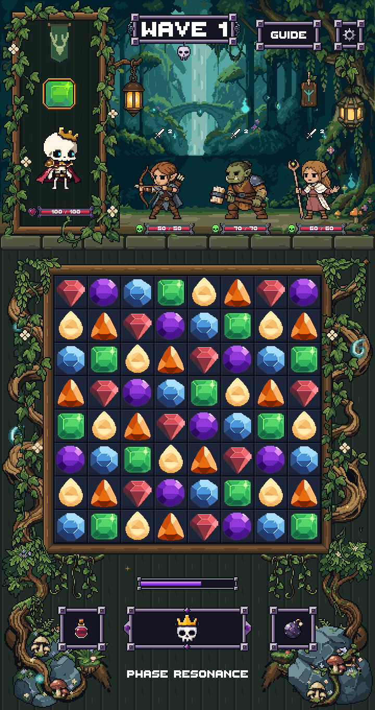

Before
After

Eight yellow fireflies use the existing top-HUD sprite. Each has its own gentle drift, brightness and fade timing, leaving the gems, controls and text clear.
Actual Unity review scene. Previous artwork and scenes remain preserved. The top HUD, waterfall, other spirits and foliage retain their existing motion. Nothing merged.

Recordings show eight seconds of Unity animation. The independently timed lights do not all blink together. Motion is snapped to native pixels; only opacity changes continuously.
Unity compilation and the focused render test passed. All 96 matching before/after frame pairs differ only inside the eight small firefly regions. The top HUD, gems, board, lower controls and text remain pixel-identical. 720 × 1360 and 1440 × 2720 captures have exact pixel doubling.
Original sources preserved: 7,102 files. Zero PixelLab generations or credits used. This is an editor art-review scene; production gameplay and device testing are separate.
Final PNG · Verification report · Pixel checks · Native firefly source